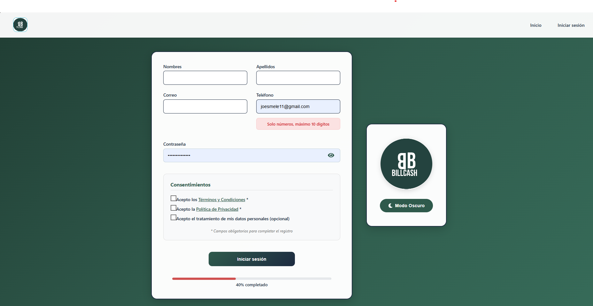
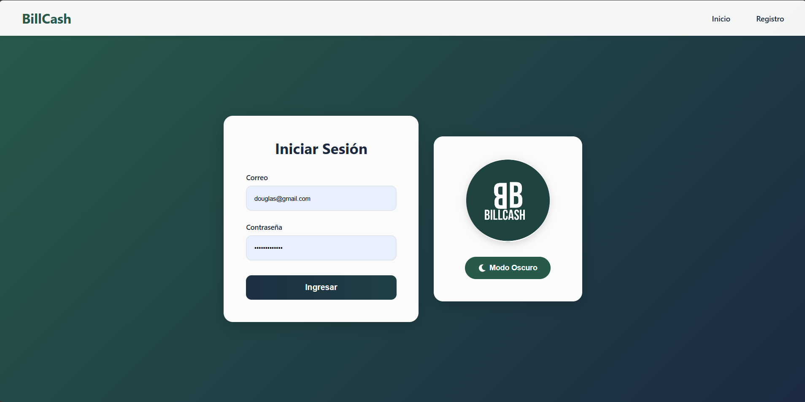
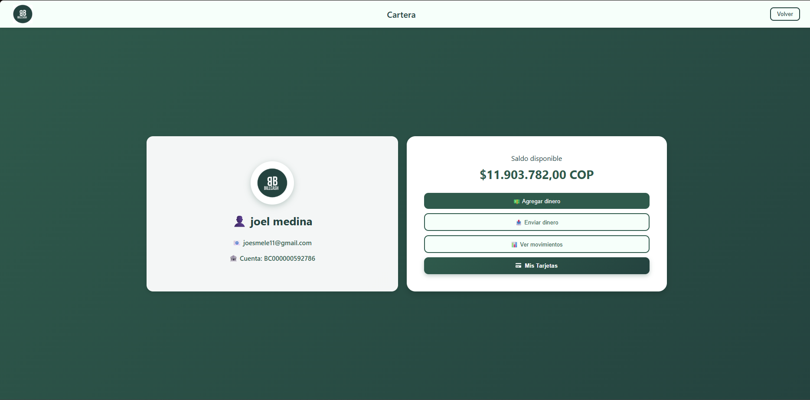

Manual de Usuario - BillCash¶
Nota
Este manual describe el uso de la aplicación BillCash v1.0.0
Introducción¶
BillCash es una aplicación móvil/web para gestión de transacciones de dinero entre usuarios. Este manual te guiará paso a paso en el uso de todas las funcionalidades del sistema.
Requisitos Previos¶
Para usar BillCash necesitas:
Conexión a internet estable
Navegador web moderno (Chrome, Firefox, Safari, Edge) o aplicación móvil
Correo electrónico válido
Número de teléfono (máximo 10 dígitos)
Características del Sistema¶
✅ Interfaz moderna y fácil de usar
🌙 Modo oscuro disponible
💰 Envío y solicitud de dinero en tiempo real
� Cartera digital con historial completo
📊 Dashboard con estadísticas en tiempo real
🔒 Seguridad con encriptación de contraseñas
📱 Diseño responsive (adaptable a móviles y tablets)
🔔 Notificaciones instantáneas
1. Registro de Usuario¶
Cómo crear tu cuenta en BillCash¶
La pantalla de registro te permite crear una nueva cuenta en el sistema.
{kind=link}

Pasos para registrarte:
Accede a la aplicación
Abre BillCash en tu navegador o aplicación móvil.
Haz clic en «Registro»
En la pantalla de inicio, selecciona la opción de registro.
Completa el formulario
Llena los siguientes campos obligatorios:
Nombres: Tu(s) nombre(s) completo(s)
Apellidos: Tus apellidos completos
Correo: Tu dirección de correo electrónico (será tu usuario)
Teléfono: Tu número telefónico (solo números, máximo 10 dígitos)
Contraseña: Crea una contraseña segura (se mostrará como puntos)
Revisa el progreso
En la parte inferior verás una barra de progreso indicando «40% completado».
Haz clic en «Iniciar sesión»
Una vez completado el formulario, presiona el botón azul oscuro.
Validaciones importantes:
Advertencia
El correo debe ser único (no puede estar registrado previamente)
El teléfono debe contener solo números, máximo 10 dígitos
La contraseña debe ser segura
Todos los campos son obligatorios
Elementos adicionales:
Logo BillCash: En el panel derecho se muestra el logo de la aplicación
Modo Oscuro: Botón disponible para cambiar el tema visual
2. Iniciar Sesión¶
Cómo acceder a tu cuenta¶
Una vez registrado, puedes iniciar sesión para acceder a todas las funcionalidades.
{kind=link}

Pasos para iniciar sesión:
Accede a la pantalla de inicio
Si ya tienes cuenta, haz clic en «Inicio» en el menú superior derecho.
Ingresa tus credenciales
Correo: Escribe el correo electrónico con el que te registraste
Contraseña: Ingresa tu contraseña (se mostrará oculta)
Haz clic en «Ingresar»
Presiona el botón verde para acceder al sistema.
Acceso exitoso
Serás redirigido al dashboard principal de la aplicación.
Características de seguridad:
🔒 Las contraseñas se muestran ocultas por seguridad
⏱️ Las sesiones expiran después de 30 minutos de inactividad
🔐 Validación de credenciales en tiempo real
¿Olvidaste tu contraseña?
Nota
Si olvidaste tu contraseña, puedes recuperarla mediante el enlace «¿Olvidaste tu contraseña?» (funcionalidad en desarrollo).
Opciones de tema:
El botón «🌙 Modo Oscuro» te permite cambiar entre tema claro y oscuro para mayor comodidad visual.
3. Enviar Dinero¶
Cómo transferir dinero a otros usuarios¶
La función principal de BillCash es enviar dinero de forma rápida y segura.

Pasos para enviar dinero:
Accede a «Enviar y Solicitar»
Desde el menú principal, selecciona la opción de transacciones.
Completa el formulario de envío
Buscar Usuario: Escribe el nombre, apellido o correo del destinatario
Monto: Ingresa la cantidad de dinero que deseas enviar
Mensaje: (Opcional) Agrega un mensaje o nota sobre el envío
Verifica los datos
Asegúrate de que el usuario destinatario y el monto sean correctos.
Haz clic en «Enviar»
El botón verde procesará la transacción.
Funcionalidades adicionales:
Cambiar a Solicitar: Si deseas solicitar dinero en lugar de enviarlo, haz clic en el botón blanco «Cambiar a Solicitar»
Volver: Botón en la esquina superior derecha para regresar al menú principal
Validaciones del sistema:
Advertencia
El destinatario debe existir en el sistema
Debes tener saldo suficiente para realizar el envío
El monto debe ser mayor a cero
La transacción quedará en estado «Pendiente» hasta su aprobación
Estados de la transacción:
Pendiente: Transacción creada, esperando validación
En Proceso: El sistema está procesando la transferencia
Completada: Dinero transferido exitosamente
Cancelada: Transacción cancelada por el usuario o sistema
4. Solicitar Dinero¶
Cómo solicitar dinero a otros usuarios¶
Además de enviar, puedes solicitar dinero a otros usuarios del sistema.

Pasos para solicitar dinero:
Cambia al modo «Solicitar»
Si estás en la pantalla de «Enviar», haz clic en «Cambiar a Solicitar». Los botones cambiarán: «Solicitar» (verde) y «Cambiar a Enviar» (blanco).
Completa el formulario
Buscar Usuario: Escribe el nombre, apellido o correo de quien solicitas dinero
Monto: Ingresa la cantidad que deseas solicitar
Mensaje: (Opcional) Explica el motivo de tu solicitud
Haz clic en «Solicitar»
El botón verde enviará la solicitud al usuario.
Diferencias entre Enviar y Solicitar:
Enviar Dinero |
Solicitar Dinero |
|---|---|
Requieres tener saldo |
No requieres saldo |
Tú inicias la transacción |
El otro usuario debe aprobar |
El dinero se transfiere de inmediato |
Queda pendiente hasta aprobación |
Notificaciones:
El usuario solicitado recibirá una notificación sobre tu solicitud y podrá:
✅ Aprobar la solicitud (enviará el dinero)
❌ Rechazar la solicitud
⏸️ Ignorar la solicitud (expirará después de 24 horas)
5. Home (Dashboard Principal)¶
Panel de control de tu cuenta¶
El Home o Dashboard es la pantalla principal donde puedes ver un resumen de tu cuenta y acceder rápidamente a todas las funcionalidades.

Elementos del Dashboard:
Una vez que inicies sesión, verás:
Información de cuenta
Nombre de usuario
Saldo disponible
Avatar o foto de perfil
Acceso rápido a funciones
💸 Enviar dinero
💰 Solicitar dinero
👛 Ver cartera (transacciones)
⚙️ Configuración
Resumen de actividad reciente
Últimas transacciones
Notificaciones pendientes
Solicitudes de dinero recibidas
Estadísticas visuales
Gráficos de ingresos y egresos
Balance del mes
Comparativas
Acciones disponibles desde el Home:
Ver saldo: Tu balance actual se muestra destacado en la parte superior
Notificaciones: Ícono de campana con contador de alertas
Menú de usuario: Acceso a perfil y configuración
Modo oscuro: Cambio rápido de tema visual
6. Cartera (Transacciones)¶
Cómo consultar tu historial de transacciones¶
La Cartera te permite ver todas tus transacciones realizadas y gestionar tu dinero.
{kind=link}

Acceso a la Cartera:
Haz clic en «Cartera»
Desde el menú principal o el dashboard, selecciona la opción de cartera.
Espera la carga
El sistema consultará tu historial. Verás el mensaje «Cargando…» mientras se obtienen los datos.
Información mostrada:
Para cada transacción verás:
Tipo: Envío, Solicitud, Recepción
Usuario: Con quién realizaste la transacción
Monto: Cantidad de dinero
Fecha y hora: Cuándo se realizó
Estado: Pendiente, Completada, Cancelada
Mensaje: Nota asociada (si existe)
Filtros disponibles:
Puedes filtrar las transacciones por:
Fecha: Selecciona un rango de fechas
Tipo: Envíos, Recepciones, Solicitudes
Estado: Todas, Pendientes, Completadas, Canceladas
Saldo y balance:
En la parte superior de la Cartera verás:
Saldo actual: Dinero disponible en tu cuenta
Saldo total: Incluyendo dinero en transacciones pendientes
Balance del mes: Resumen de ingresos y egresos
Acciones disponibles:
Desde esta pantalla puedes:
👁️ Ver detalles completos de una transacción
❌ Cancelar transacciones pendientes
📄 Exportar tu historial (PDF, Excel)
🔍 Buscar transacciones específicas
💳 Recargar saldo
🏦 Retirar dinero
Estados de transacciones:
Estado |
Descripción |
|---|---|
🟡 Pendiente |
Transacción creada, esperando procesamiento |
🔵 En Proceso |
El sistema está validando la transacción |
🟢 Completada |
Transacción exitosa, dinero transferido |
🔴 Cancelada |
Transacción cancelada por usuario o sistema |
⚠️ Error |
Ocurrió un error, contacta soporte |
Botón Volver:
En la esquina superior derecha encontrarás el botón «Volver» para regresar al menú principal.
Preguntas Frecuentes (FAQ)¶
Registro y Cuenta¶
¿Puedo cambiar mi correo después de registrarme?
No, el correo electrónico es tu identificador único. Si necesitas cambiarlo, contacta a soporte.
¿Puedo tener múltiples cuentas?
No, cada correo y teléfono solo puede tener una cuenta asociada.
¿Cómo cambio mi contraseña?
Desde el menú de perfil > Configuración > Cambiar contraseña.
Transacciones¶
¿Cuál es el monto mínimo para enviar?
El monto mínimo es $1.00 (un peso/dólar).
¿Hay límite máximo de envío?
Sí, el límite diario es de $10,000.00 por motivos de seguridad.
¿Puedo cancelar un envío?
Solo puedes cancelar transacciones en estado «Pendiente» o «En Proceso».
¿Cuánto tarda una transferencia?
Las transferencias se procesan en tiempo real, generalmente en menos de 1 minuto.
Seguridad¶
¿Es seguro BillCash?
Sí, utilizamos encriptación de datos, tokens JWT y cumplimos con estándares de seguridad bancaria.
¿Qué hago si detecto una transacción no autorizada?
Contacta inmediatamente a soporte a través del botón de «Ayuda» o escribe a soporte@billcash.com.
¿Puedo recuperar mi contraseña?
Sí, usa la opción «¿Olvidaste tu contraseña?» en la pantalla de inicio de sesión.
Solución de Problemas¶
No puedo iniciar sesión¶
Posibles causas y soluciones:
Credenciales incorrectas
Verifica que el correo esté escrito correctamente
Asegúrate de usar la contraseña correcta
Usa la opción de recuperación de contraseña si es necesario
Cuenta no verificada
Revisa tu correo electrónico
Busca el email de verificación de BillCash
Haz clic en el enlace de confirmación
Cuenta bloqueada
Después de 5 intentos fallidos, la cuenta se bloquea temporalmente
Espera 30 minutos o usa recuperación de contraseña
Error al enviar dinero¶
Mensaje: «Saldo insuficiente»
Verifica que tengas saldo disponible en tu cuenta. Puedes solicitar dinero o hacer una recarga.
Mensaje: «Usuario no encontrado»
Asegúrate de escribir correctamente el nombre, apellido o correo del destinatario.
Mensaje: «Error de conexión»
Verifica tu conexión a internet y vuelve a intentarlo.
La página no carga¶
Actualiza la página: Presiona F5 o Ctrl+R
Limpia caché: Borra el caché de tu navegador
Prueba otro navegador: Chrome, Firefox o Edge
Verifica tu conexión: Asegúrate de tener internet estable
Contacto y Soporte¶
¿Necesitas ayuda adicional?¶
Email de soporte: soporte@billcash.com
Horario de atención: Lunes a Viernes: 8:00 AM - 8:00 PM Sábados: 9:00 AM - 2:00 PM
Chat en vivo: Disponible en la aplicación (botón de ayuda 💬)
Centro de ayuda: https://ayuda.billcash.com
Redes sociales:
Twitter: @BillCashApp
Facebook: /BillCashOficial
Instagram: @billcash_oficial
Actualizaciones del Manual¶
Versión actual: 1.0.0
Última actualización: Octubre 2025
Registro de cambios:
v1.0.0 (Oct 2025) - Manual inicial con funcionalidades base
Términos y Condiciones¶
Al usar BillCash, aceptas:
Los Términos y Condiciones de Uso
La Política de Privacidad
El Aviso de Privacidad
Puedes consultar estos documentos en: https://www.billcash.com/legal
Volver a la documentación¶
BillCash - Documentación del Sistema - Página principal
Casos de Uso - BillCash - Casos de uso del sistema
© 2025 BillCash - Todos los derechos reservados